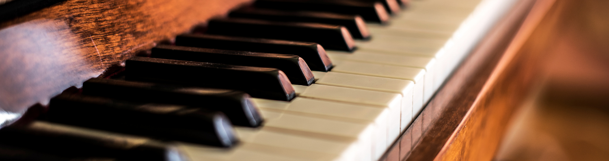
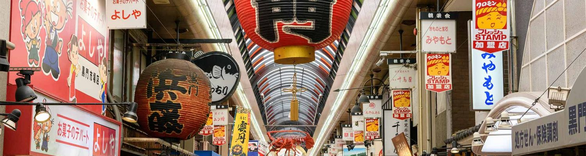
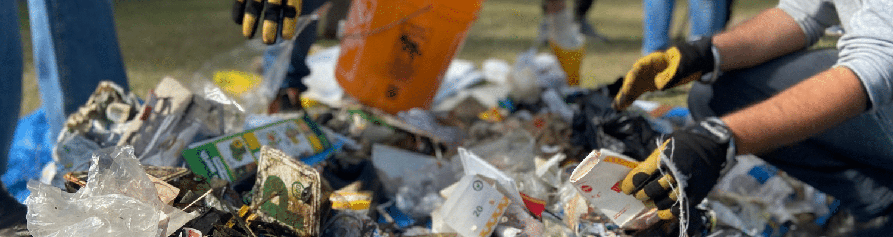
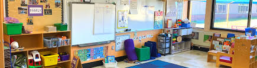
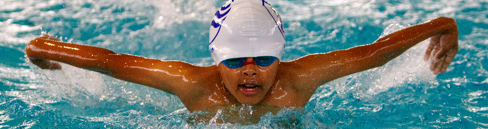

Qualifications in English
- SAT score: English: 650
- TOEIC L&R score: 950
Extracurriculars and Achievements
Piano 
Took classes for three years (5-8th grade), along with participating in two concerts.
Japanese 
Honed my Japanese speaking skills over the range of 5 years in Kumon. Advanced 9 skill levels and took several Japanese speaking and writing tests. JLPT scores: N5 & N4 passed.
Community Service 
Volunteered in several organizations over my summer break - total 20 hrs.
- Several hours of tango therapy with old age homes and making crafts for children's homes as a part of Hands on Tokyo.
- Volunteered as an invigilator during olympiad testing at my school.
- Cleaning up the riverside with Tokyo River friends.
Public Speaking
- Won third place in News Presentation in a class competition in 8th grade.
- Won first place in a class debate competition in 7th grade.
- Won 2nd position in an essay writing competition in 7th grade.
- Acted as the lead role in the school play ‘The Mousetrap- by Agatha Christie’ in grade 11.
- Ran for student council in the 11th grade for the post of Treasurer.
School Representation 
Represented my school in a conference entitled International Understanding and Research in the Tokyo Metropolitan Science and Technology High School.
Swimming 
Learned to swim in a competitive environment and passed 17 levels involving different techniques.
Athletics
- Took tennis classes for a year in the 8th grade.
- Secured 3rd position in an obstacle race in 7th grade.
Olympiads
Participated in SilverZone olympiads in grade 8. English Olympiad - state rank 75.
Languages Known
- English
- Japanese
- Hindi
- Bengali